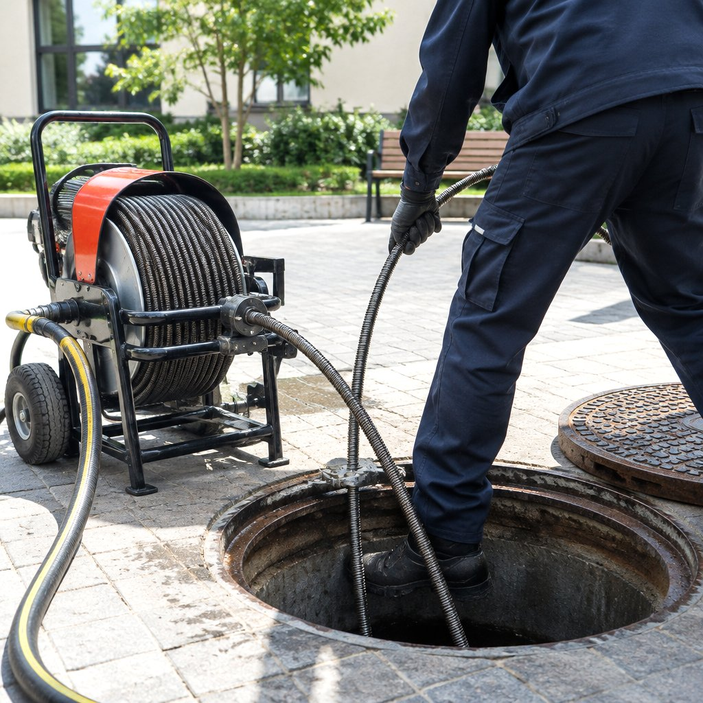
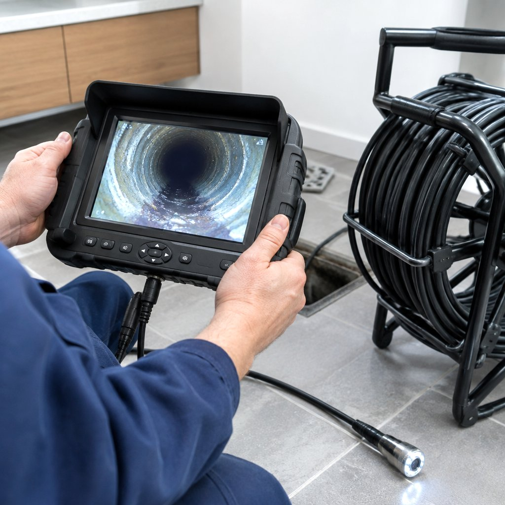

Прочистка канализации в Борисове — приедем и днём, и в три часа ночи
Засор в квартире, в частном доме или во дворе: проходим тросом и электромеханической машиной, при необходимости смотрим трубу камерой. Работаем круглосуточно, без наценки за ночь.
Три инструмента под разные засоры
Один и тот же засор не всегда лечится одинаково: где-то хватает троса, где-то нужна машина с валом, а иногда сначала стоит посмотреть трубу камерой, чтобы не рвать её вслепую.
Прочистка тросом
Жир, волосы, мыло в сифоне и отводе. Работаем вручную, аккуратно, без разбора сантехники, если можно обойтись.
Электромеханическая пробивка
Плотные пробки, наросты и корни в лежаке и стояке. Машина с валом проходит то, что трос не берёт.
Видеодиагностика
Камера показывает, что внутри: трещина, просадка, корни. Видно, поможет прочистка или нужен ремонт участка.
Что случилось у вас?
Выберите ситуацию — покажем, чем обычно работаем, сколько времени это занимает и что нужно подготовить. Это ориентир: точный ответ даём после пары вопросов по телефону.
Что важно, когда вода уже стоит
В такой ситуации решают не обещания, а время и понятный порядок действий.
Круглосуточно и без выходных
Ночь, выходной, праздник — выезжаем так же, как днём. Диспетчер отвечает по телефону в любое время.
Сначала причина, потом работа
Если видно, что прочистка не поможет, говорим сразу и предлагаем диагностику, а не «попробуем ещё раз».
Убираем за собой
Подкладываем защиту, собираем грязь после работы, оставляем санузел и двор такими, какими они были до выезда.
От звонка до проверки слива
Никакой магии: четыре шага, которые занимают обычно меньше часа.
Звонок и вопросы
Спрашиваем, где стоит вода, есть ли доступ к ревизии и колодцу, что уже пробовали.
Выезд
Мастер едет с тросом и машиной. По Борисову обычно 15–40 минут.
Прочистка
Проходим засор, при необходимости промываем участок под давлением.
Проверка
Сливаем воду несколько раз, проверяем стыки и рассказываем, как не повторить.
Камера вместо догадок
Если засоры повторяются в одном и том же месте, дело не в жире, а в трубе. Камера показывает это за один выезд.

Заводим камеру в трубу, записываем проход и показываем запись на экране. По видео понятно: труба цела и дело в эксплуатации или участок пора менять.
Коротко о главном
Если вашего вопроса здесь нет — позвоните, ответим сразу.
Стоимость зависит от того, где засор и какой инструмент нужен: сифон, лежак, стояк или дворовая сеть. Цену называем по телефону до выезда, а на месте подтверждаем до начала работ.
Да, круглосуточно. Ночь и выходные не делают работу дороже.
В большинстве случаев да: трос проходит через чашу. Снимаем только если иначе не достать до засора.
Не лейте в слив кипяток и не сыпьте химию в стояк: станет только хуже и опаснее для труб. Просто уберите воду с пола, если она уже выступила.
Если засор вернулся в тот же день по нашей работе, приезжаем повторно без оплаты.
Вода стоит прямо сейчас?
Позвоните — скажем, сколько займёт выезд, и назовём цену до начала работ.